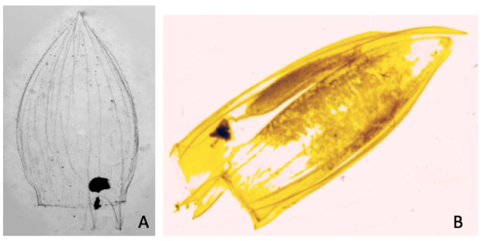

1 Cnidaria
Les Cnidaria est un embranchement d’eumétazoaires à symétrie radiaire. Ce sont des organismes aquatiques, principalement marins, possédant des cellules caractéristiques, les cnidocytes qui sont des cellules ectodermiques urticantes. Il existe deux formes différentes de morphologie chez les cnidaires : polype et méduse. Certaines classes de cnidaires seront uniquement présentes sous formes polypes tandis que d’autres passeront par les deux stades. Une grande partie des cnidaires adoptent des formes coloniales constituées de zoïdes. Lors de leur cycle de vie, ces organismes passeront par un stade de larve appelée planula. Cet embranchement est divisé en 2 superclasses, les Meduzoa et les Anthozoa, elles-mêmes divisées en différentes classes et sous-classes (Ruppert, Fox, et Barnes 2004).
La phylogénie des cnidaires, notamment pour les Meduzoa, porte toujours à débat. La classification employée (Figure 1.1) sera celle proposée par Kayal et al. (2018) .

1.1 Scyphozoa
Les scyphozoaires sont les cnidaires communément appelés méduse. Ce sont des organismes principalement pélagiques dont le cycle de vie ( Figure 1.2) passe par différents stades, à la fois benthiques et pélagiques (Conway 2012).

Les méduses adultes se retrouvent dans l’océan principalement au printemps et en été. Elles produisent des œufs qui vont donner une larve planula. Cette larve ciliée reste peu de temps sous forme planctonique et va se fixer sur une surface pour donner une scyphistoma qui va produire des stolons qui bourgeonneront pour donner d’autres individus par reproduction asexuée. Au début du printemps, par processus de strobilisation, le scyphistoma va se diviser en plusieurs disques qui resteront un temps attachés en un strobila. Petit à petit, ces disques vont se détacher pour donner une nouvelle phase pélagique, la larve éphyra (Kavanau 2006).
Certaines éphyras peuvent attendre plus de deux ans pour donner une nouvelle méduse adulte (caractérisée par la capacité de pouvoir faire de la reproduction sexuée) (Ruppert, Fox, et Barnes 2004)
Dans le cadre de ce guide, seuls les individus au stade éphyra sont pris en compte. Les larves éphyras ( sont des organismes planctoniques caractérisés par une symétrie radiaire à 8 rayons (Quivy, Thomas 2018). Elles sont donc facilement reconnaissables sur une vignette, mais il serait intéressant de pouvoir distinguer différentes larves éphyras provenant de différents scyphozoaires. Les larves éphyras sont produites suite au phénomène de strobilisation qui est déclenché principalement par la disponibilité en nourriture et la température. Les larves éphyras sont abondantes principalement en Mars/Avril mais ce stade dure parfois jusqu’en hiver (Conway 2012).

Le centre de l’organisme est constitué du manubrium (portant la bouche), de l’estomac divisé en 4 lobbes et de 4 filaments gastriques. Chaque bras contient en son centre un canal rabial constitué des muscles radiaux. Chaque extrémité des bras contient un tentaculocyste ou rhopalie qui est un organe sensoriel servant principalement à la vue et l’olfaction (Figure 1.3 ).
Il existe différentes classifications pour la classe des Scyphozoa. En effet certains scientifiques considèrent cette classe comme étant sœur des Cubozoa, tandis que d’autres incluent ces dernières dans les Scyphozoa. Pour ce guide les Cubozoa seront considérés comme n’étant pas inclus dans les Scyphozoa mais comme étant une classe sœur, tendance soutenue par la plupart des études récentes (Kayal et al. 2018; Yamamori et al. 2017).
Trois ordres de Scyphozoa sont donc considérés :
Semaeostomeae
Rizostomeae
Coronatae
Il serait intéressant de pouvoir distinguer les larves éphyras de ces 3 ordres de Scyphozoa. Malheureusement il s’avère que la littérature est assez pauvre quant à l’étude du cycle de vie des schyphozoaires, en particulier sur les stades pélagiques. De plus au vue des grandes similarités morphologiques entre les stades éphyras des différentes espèces, l’identification sur base de ce stade est difficile (Tronolone, Morandini, et Migotto 2002). La difficulté sur base de la morphologie pour ces larves est accrue du fait qu’elles soient encore en développement et que la morphologie est encore sujette à de nombreux changements, les organismes Pelagia voient par exemple leurs nombres de filaments gastriques passer de 4 à 8 en 76 jours (Tronolone, Morandini, et Migotto 2002). Les éphyras fraîchement libérées sont extrêmement semblables et de ce fait difficilement discernables (Conway 2012).
La distinction entre les Semaeostomeae et les Rizostomeae se base principalement sur la morphologie des canaux radiaux et adriaticaux. Cela rajoute une difficulté car il faut que l’organisme soit bien disposé pour bien identifier ces morphologies.
- Les Semaeostomeae : les méduses adultes de cet ordre font de 10 à 30 cm en moyenne et sont constituées de 4 bras. Les larves ephyra possède une structure des conaux radiaux et adriaticaux particulier (Figure 1.4). Cet ordre comprend plus de 50 espèces avec entre autre, Aurelia aurita (Ruppert, Fox, et Barnes 2004)

La Figure 1.5 propose des vignettes supplémentaires.
plot_vignettes(vigns, group = "semaeostomeae")
- Les Rhizostomeae : les larves ephyra possède une structure des conaux radiaux et adriaticaux particulier ( Figure 1.6 ). cet ordre est constitué de 80 espèces de méduses dont les Cassiopeia, communes dans les régions chaudes du globes (Ruppert, Fox, et Barnes 2004).

La Figure 1.7 propose des vignettes supplémentaires.
plot_vignettes(vigns, group = "rhizostomeae")
- Les Coronatae : après l’analyse des vignettes, il s’avère qu’aucune Coronatae n’a été identifiée. Cet ordre comprend 30 espèces, dont Conulata. C’est l’ordre le plus primitif des Scyphozoa.
1.2 Hydrozoa
Les organismes de la classe Hydrozoa ont un cycle de vie comprenant le stade polype (majoritaire) et le stade méduse. Cette classe est la plus diversifiée des cnidaires et comprend à la fois des individus marins et dulçaquicoles (Bouillon et al. 2006). Les méduses de cette classe sont de plus petites tailles que chez les Scyphozoa et vivent généralement en banc (Ruppert, Fox, et Barnes 2004).
Les différents ordres d’Hydrozoa et leurs positions phylogénétiques sont encore fortement débattus. Le set d’apprentissage utilisé par Fullgrabe et al. (2020) s’était concentré sur 2 ordres en particulier, les Siphonophorae et les Hydromedusa. Malheureusement ce set d’apprentissage doit être revu, la classification ayant changé depuis. Ce travail se basera sur une classification plus moderne des Cnidaires, celle basée sur Kayal et al. (2018).
Les Hydrozoa sont constitués de 6 ordres ( Figure 1.1 ). Il est judicieux dans un premier temps de répartir ces 6 ordres dans 2 groupes distincts ( Table 1.1 ). La séparation des deux groupes se base sur la distinction entre la sous-classe des Trachylinae et la sous-classe des Hydroidilina (Bentlage et al. 2018; Kayal et al. 2018; Conway 2012).
knitr::kable(
tibble::tibble(
"Trachylinae" = c("Limnomedusae","Narcomedusae"," "," "),
"Hydroidolina" = c("Siphonophorae","Aplanulata", "Leptothecata", "Filifera")
)
)| Trachylinae | Hydroidolina |
|---|---|
| Limnomedusae | Siphonophorae |
| Narcomedusae | Aplanulata |
| Leptothecata | |
| Filifera |
Il est très difficile d’établir une phylogénie correcte des Hydrozoa tant ce groupe est actuellement en plein remaniement. Ainsi, les Trachylinae comportent tantôt 2 ordres (Limnomedusae et Narcomedusae), tantôt 3 ordres (Limnomedusae, Narcomedusae et Trachymedusae). Néanmoins, une tendance semble de plus en plus considérer les Trachymedusae comme étant très proches des Narcomedusae (Collins et al. 2008).
1.2.1 Trachylinae
Les Trachylinae sont une sous-classe d’Hydrozoa comportant les Limnomedusae et les Narcomedusae (Kayal et al. 2018) . Ces organismes se distinguent par [Ruppert, Fox, et Barnes (2004)] :
des statolithes endodermiques
un stade polype réduit voir absent
des bulbes tentaculaires remplis d’endoderme
Les Limnomedusae sont des méduses en forme de cloche, avec des tentacules sans véritables bulbes basaux trouvées principalement en mer ouverte. Quant aux Narcomedusae, ce sont des méduses avec une exombrelle divisée par des rainures, avec des tentacules dépourvues de bulbes et se trouvant principalement en mer ouverte (Conway 2012).
Bien que ces organismes soient difficilement identifiables, certains clades se reconnaissent facilement, comme par exemple les Rhopalonematidae
La Figure 1.8 propose des vignettes supplémentaires.
plot_vignettes(vigns, "rhopalonematidae")1.2.2 Hydroidolina
Les Hydroidolina sont des organismes possédant un cycle de vie passant par le stade polype et méduse. Les différents ordres de cette sous-classe se différencient principalement par la structure du polype, non échantillonné à Calvi. De ce fait, il sera extrêmement difficile d’aller plus loin dans la taxonomie.
1.2.2.1 Siphonophorae
Comme expliqué précédemment, pour rester cohérent avec les études de Fullgrabe et al. (2020), Quivy, Thomas (2018) , un accent sera porté sur les siphonophores. Le siphonophore est un super-organisme constitué d’une colonie de plus petits individus appelés zoïdes (Ruppert, Fox, et Barnes 2004). En fonction de leurs rôles au sein de la colonie, le zoïdes portent des noms différents ( Table 1.2 ). Généralement les siphonophores s’abîment lors d’une capture avec un filet à plancton, il est donc très difficile d’estimer le nombre d’individus d’un échantillon via un trait de plancton.
knitr::kable(
tibble::tibble(
"Zoïdes" = c("Gonozoïde","Dactylozoïde","Gastrozoïde","Pneumatophore","Nectophore"),
"Fonctions" = c("Reproduction","Défense","Digestion","Flottaison","Locomotion")
)
)| Zoïdes | Fonctions |
|---|---|
| Gonozoïde | Reproduction |
| Dactylozoïde | Défense |
| Gastrozoïde | Digestion |
| Pneumatophore | Flottaison |
| Nectophore | Locomotion |
La morphologie des nectophores est très utilisée en taxonomie car même si l’individu se dégrade lors de la capture avec un filet, la morphologie de base du nectophore est relativement bien conservée. Les nectophores sont les zoïdes formant le nectosome, partie supérieur du super-organisme, et permettant la locomotion. Les nectophores sont des organismes génétiquement identiques ayant une morphologie en forme de cloche ( Costello et al. (2015) ) Au centre de l’organisme, un nectosac est visible, ce dernier étant relié à un canal pédiculaire Figure 1.9.
L’ordre de Siphonophorae est constitué de différents sous-ordres :
Cystonectae
Calycophorae
Physonectae
Etant donné que les Cystonectae ne possèdent pas de nectophore, ceux-ci ne sont pas considérés dans ce guide. En effet, les Cystonectae sont constitués d’un pneumatophore volumineux et d’un siphosome constitué de gastrozoïdes (Bardi et Marques 2007) .
La précédente étude de Fullgrabe et al. (2020) avait établi un set d’apprentissage distinguant les Calycophorae et les Physonectae, en distinguant également une famille de Calycophorae les Abylidae.
Au vu des organismes étudiés, l’identification peut poser problème. Tout d’abord de part le fait que ce sont des organismes relativement mous et qu’ils peuvent mal se positionner et s’écraser en un nombre important de formes différentes. Ensuite, les nectophores sont de morphologies très variables en fonction de leurs stades de développement . Enfin, les Physonectae ont été peu décrits et une espèce en particulier revient dans la majorité des études, Erenna richardii (Pugh et Haddock 2016). Le fait que quasiment une seule espèce est étudiée peut biaiser les résultats et les critères taxonomiques.
1.2.2.1.1 Calycophorae
Ce sous-ordre est le plus étudié et décrit des siphonophores, ces organismes ne possèdent pas de pneumatophores, ils ont également un nombre réduit de nectophores [Pugh, Dunn, et Haddock (2018)]. Selon l’étude de Pugh, Dunn, et Haddock (2018) ce sous ordre est divisé en deux groupes, contenant l’ensemble des familles, le groupe des priomorphes (nectophores arrondis) et le groupe des diphyomorphes (nectophores triangulaires) ( Table 1.3 )
knitr::kable(
tibble::tibble(
"Priomorphe" = c("Hippopodiidae","Prayidae","Tottonophyidae","Pneumatophore"," "),
"Diphyomorphe" = c("Abylidae","Clausophyidae","Diphyidae","Sphaeronectidae","Tottonophyidae")
)
)| Priomorphe | Diphyomorphe |
|---|---|
| Hippopodiidae | Abylidae |
| Prayidae | Clausophyidae |
| Tottonophyidae | Diphyidae |
| Pneumatophore | Sphaeronectidae |
| Tottonophyidae |
L’analyse des vignettes permettent de faire ressortir uniquement les calycophores diphyomorphes, de 2 familles distinguables, les Abylidae et les Diphyidae.
Les Abylidae Figure 1.10 possèdent de petits nectophores prismatiques à pyramidaux dont la partie antérieure est souvent longue et pointue.

La Figure 1.11 propose des vignettes supplémentaires.
plot_vignettes(vigns, "abylidae")Les Diphyidae ( Figure 1.12) possèdent des nectophores en formes de longues pyramides remplient souvent d’un long nectosac (Nishiyama, Araujo, et Oliveira 2016).

La Figure 1.13 propose des vignettes supplémentaires.
plot_vignettes(vigns, "diphyidae")1.2.2.1.2 Physonectae
Ces organismes sont constitués d’un pneumatophore, contrairement aux Calycophore ( Figure 1.14 ). Les nectophores forment ici une couronne à la base de la colonie, ils ont l’apparence de sacs dépourvus de crêtes et de stries (Pugh et Marshall 1983). Ce sous-ordre est actuellement constitué de près de 10 familles mais il est très difficile de les distinguer. Certaines études écartent les Agalmatidae du reste des familles mais les connaissances ne sont pas encore assez poussée que pour aller plus loin dans la taxonomie (Pugh 2006) .

La Figure 1.15 propose des vignettes supplémentaires.
plot_vignettes(vigns, "physonectae")1.3 Cubozoa
La classe des Cubozoa rassemblent des méduses de forme cubique caractéristiques, la plupart du temps transparentes et possédant une forte concentration en nématocystes (Ruppert, Fox, et Barnes 2004). Aucun cubozoa n’a été identifié dans cette étude, principalement car ces organismes se concentrent dans les zones chaudes et tropicales du globe (Bentlage et al. 2018). Certaines espèces de cubozoa sont tout de même recensées en méditerranée, causant notamment des blooms important au printemps (Gueroun et al. 2015).
1.4 Staurozoa
Les Staurozoa ne sont pas discuté dans ce guite. Tout simplement car ces organismes sont une classe de Cnidaire restant fixés toute leur vie et ne passant jamais par le stade pélagique (Ruppert, Fox, et Barnes 2004).